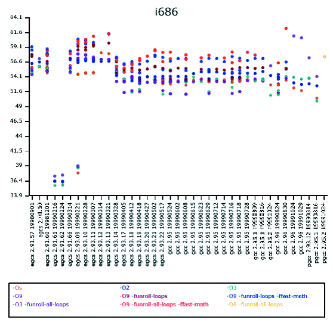

| Securing and Optimizing Linux: RedHat Edition -A Hands on Guide | ||
|---|---|---|
| Prev | Chapter 6. Linux General Optimization | Next |
Summaries by Architecture: Depending on your processor architecture and the version of your compiler GCC/EGCS, optimization results may vary. The charts below will help you to choose the best compilation flags for your compiler/CPU architecture. The compiler version installed on your Red Hat Linux version 6.1 and 6.2 is egcs 2.91.66, but be sure to check it even so before choosing your compiler optimization options.
To verify the compiler version installed on your system, use the command:
[root@deep] /# egcs --version
egcs-2.91.66
|
For a Pentium II/III CPU i686 with compiler version egcs-2.91.66, the best optimization options would be:
CFLAGS=-O9 -funroll-loops -ffast-math -malign-double -mcpu=pentiumpro -march=pentiumpro -fomit-frame-pointer -fno-exceptions
|

Comparitive analysis chart with the above mentioned flags